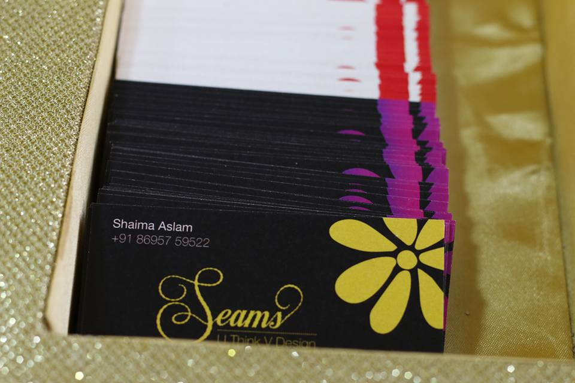

Every pearl stringed in Seema Nair’s jewelry tells a tale. The vibrant motifs, the colorful and elegant designs are the perfect fit for every occasion. The statement necklaces are a head-turner. A student of Fashion designing (DianeVon Furstenberg) and founder of Lavender, her designs have a classic outlook with a modern touch making them wadrobe essentials.
A student of National School Of Design, Shaima Aslam is a dynamic fashion designer from Chennai. With the vision of providing trendy Apparels every design of hers is unique. An upcoming fashion designer, she has curated the looks for celebrities like Anu Hasan. It would be apt to say that she has the right blend of fashion and tradition in her apparel pieces.
Studio Gulaal has the perfect marriage between the unparalled ethnic look and contemporary style. A designer of couture clothing, their design solutions provide a warm and stylish take on the classic salwar suits. Having designed the apparels for actresses like Aditi Rao Hydari and Kajal Aggarwal, they know the nuances of styling. They have even defined the designer pieces worn by the Bollywood Fashion Icon Sonam Kapoor.
The online Clothing brand Adwita has the most comfortable looking clothes. After all, Fashion’s about being comfortable. An upcoming entrepreuneur, their apparels have the perfect look millennials. These quirky looks will make sure that you look stunning. The casual look of these contemporary outfits suit every occasion.